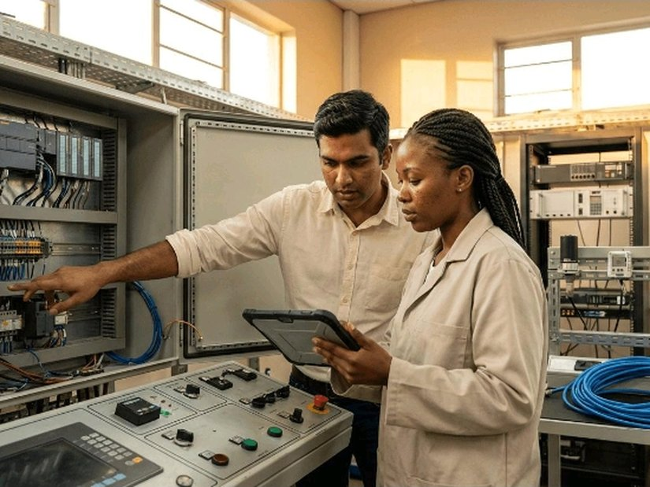

Automation & Control Systems
- Instrumentation
- PLC
- SCADA
- Control Systems
Training in industrial automation, instrumentation, control systems, and troubleshooting to support efficient and reliable plant operations.
Key training areas
- Programmable Logic Controllers (PLC) and SCADA fundamentals
- Instrumentation, sensors, and control valves
- Process control and industrial automation
- Instrument calibration, fault-finding, and troubleshooting
- Control panel operations and basic system diagnostics
- Instrument loop checking and functional testing